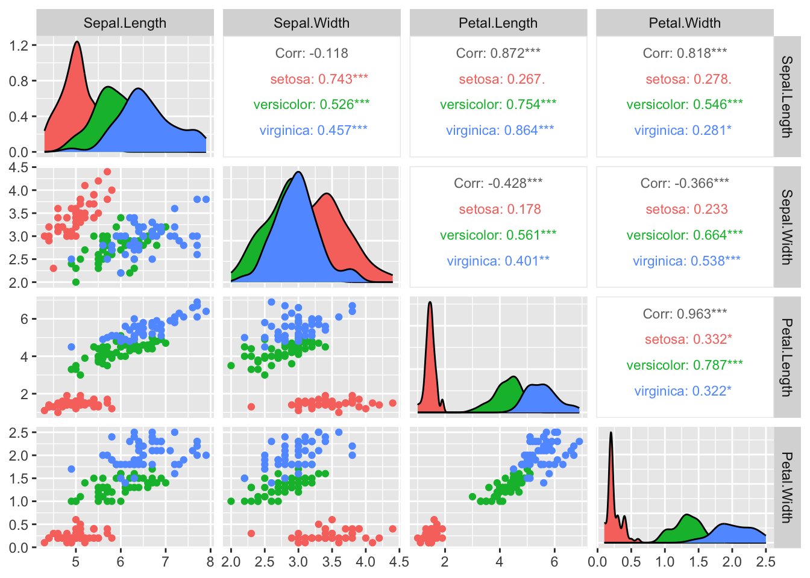

1.2 Exploratory data analysis (EDA)
A picture is worth a thousand words
.](figs/Minard.jpg)
Figure 1.1: Charles Joseph Minard’s famous map of Napoleon’s 1812 invasion of Russian. It displays six types of data in two dimensions.
Before trying any form of statistical analysis, it is always a good idea to do some form of exploratory data analysis to understand the challenges presented by the data. As a minimum, this usually involves finding out whether each variable is continuous, discrete, or categorical, doing some basic visualization (plots), and perhaps computing a few summary statistics such as the mean and variance.
1.2.1 Data visualization
Visualising datasets before fitting any models can be extremely useful. It allows us to see obvious patterns and relationships,and may suggest a sensible form of analysis. With multivariate data, finding the right kind of plot is not always simple, and many different approaches have been proposed.
When \(p=1\) or \(p=2\) we can simply draw histograms and scatter plots (respectively) to view the distribution. For \(p \geq 3\) the task is harder. One solution is a matrix of pair-wise scatter plots using the pairs command in R. The graph below shows the relationship between goals scored (F), goals against (A) and points (PT) for 20 teams during a recent Premiership season.
Figure 1.2: Scatter plots of goals for (F), goals against (A) and points (PT) for a recent Premier League Season
We can instantly see that points and goals scored are positively correlated, and that points and goals conceded (A) are negatively correlated (this is not a surprise of course).
R has a good basic plotting functionality. However, we will sometimes use packages that provide additional functionality. The first time you use a package you may need to install it. We can use ggplot2 and GGally (which adds functionality to ggplot2) to add colour and detail to pairs plots. For example
data(iris)
library(ggplot2)
library(GGally)
# pairs(iris) # - try the pairs command for comparison
ggpairs(iris, columns=1:4, mapping=ggplot2::aes(colour = Species),
upper = list(continuous = wrap("cor", size = 3))) # fix the font size
This plot allows us to instantly see that there are clear differences between the three species of iris, at least when we look at the pairs plots. The benefit of adding colour in this case is that we can see the differences between the different species. Note how the sepal length and width are (weakly) negatively correlated across the entire dataset, but are positively correlated when we look at a single species at a time. We would have missed this information if we only used the pairs command (try it!).
Note that it is possible to miss key relationships when looking at marginals plots such as these, as they only show two variables at a time. More complex relationships between three or more variables will not be visible. It is difficult visualize data in three or more dimensions. Many different types of plot have been proposed (e.g. Google Chernoff faces). One approach is to use a parallel line plot

Each case is represented by a single line, and here we have the information shown for the four continuous variables. The fifth variable Species is a discrete factor, and is shown by colouring the lines.
If you not familiar with ggplot2, a nice introduction can be found here. Details about `GGally can be found here. A good way to see the variety of plots that are possible, and to find code to create them, is to browse plot galleries such as those available
here
and here.
1.2.2 Summary statistics
It is often useful to report a small number of numerical summaries of the data. In univariate statistics we define the sample mean and sample variance of samples \(x_1, \ldots, x_n\) to be \[ \bar{x} = \frac{1}{n} \sum_{i=1}^n x_i \quad \text{and} \quad s_{xx} = \frac{1}{n} \sum_{i=1}^n (x_i - \bar{x})^2 \] and for two samples, \(x_1, \ldots, x_n\) and \(y_1, \ldots, y_n\), we define the sample covariance to be \[s_{xy}=\frac{1}{n}\sum_{i=1}^n (x_i-\bar{x})(y_i-\bar{y}).\]
Analogous multivariate quantities can be defined as follows:
Note that
- \(\bar{\mathbf x} \in \mathbb{R}^p\). The \(j\)th entry in \(\bar{\mathbf x}\) is simply the (univariate) sample mean of the \(j\)th variable.
- \(\mathbf S\in \mathbb{R}^{p\times p}\). Note that the \(ij^{th}\) entry of \(\mathbf S\) is \(s_{ij}\), the sample covariance between variable \(i\) and variable \(j\). The \(i^{th}\) diagonal element is the (univariate) sample variance of the \(i\)th variable.
- \(\mathbf S\) is symmetric since \(s_{ij}=s_{ji}\).
- an alternative formula for \(\mathbf S\) is \[\mathbf S= \frac{1}{n} \left(\sum_{i=1}^n \mathbf x_i \mathbf x_i^\top \right)- \bar{\mathbf x} \bar{\mathbf x}^\top.\]
- We have divided by \(n\) rather than \(n-1\) here, which gives the maximum likelihood estimator of the variance, rather than the unbiased variance estimator that is often used.
Note that
- If \(\mathbf D= \text{diag}(\sqrt{s_{11}}, \dots, \sqrt{s_{pp}})\), then
\[ \mathbf R= \mathbf D^{-1} \mathbf S\mathbf D^{-1} \] - \(\mathbf R\) is symmetric
- the diagonal entries of \(\mathbf R\) are exactly 1 (each variable is perfectly correlated with itself)
- \(|r_{ij}| \leq 1\) for all \(i, j\)
Note that if we change the unit of measurement for the \(\mathbf x_i\)’s then \(\mathbf S\) will change but \(\mathbf R\) will not.